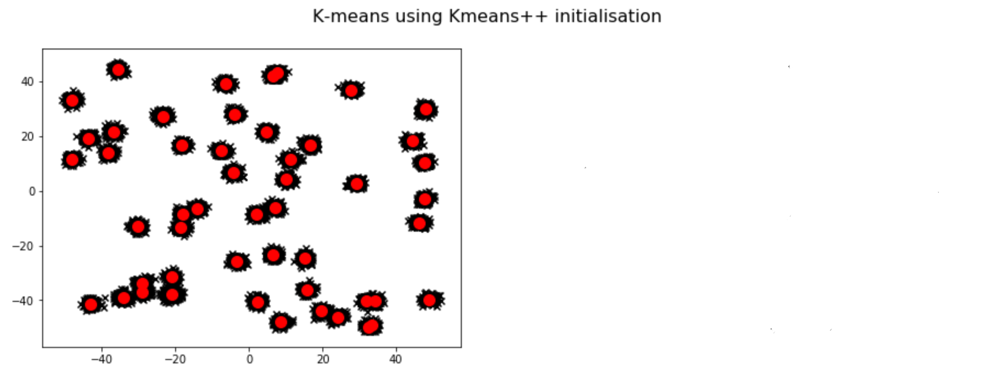
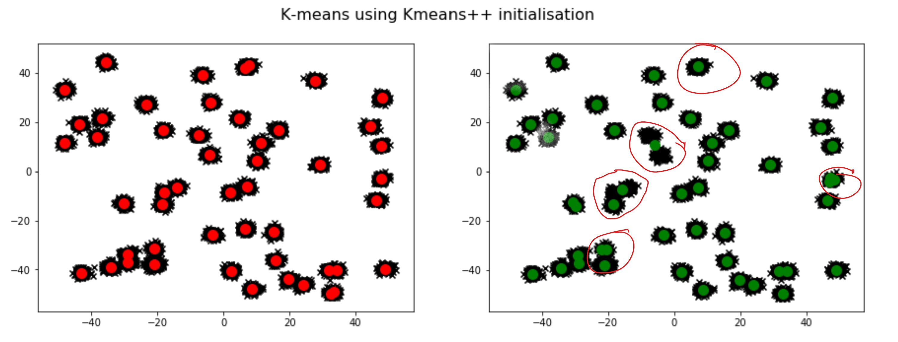
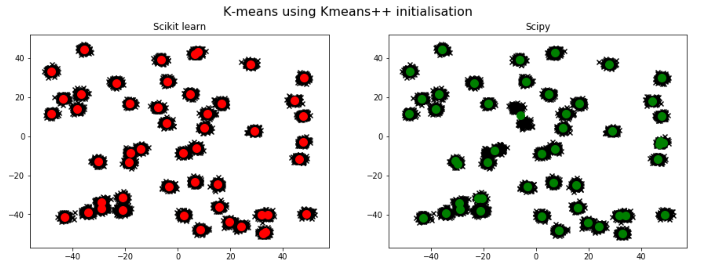

Good enough practice in Data Science
Mike Croucher
Developer Advocate
@walkingrandomly and @NAGTalkMichael.Croucher@nag.co.uk
https://www.linkedin.com/in/mike-croucher-32336113/
Imagine...
Your results are amazing!
but wrong
Mike Konczal
“all I can hope is that future historians note that one of the core empirical points providing the intellectual foundation for the global move to austerity in the early 2010s was based on someone accidentally not updating a row formula in Excel”
What were the real errors?
- They used Excel (subject to debate)
- They didn't share their code and data (Vital!)
This 2003 trial, done in Kenya, found that deworming whole schools improved children’s health, school performance, and school attendance.
In 2013, the data was reanalysed independently using new computer programs
Many mistakes found.
Further examples
We have a problem!

Croucher's law
I can be an idiot and WILL make mistakes.
You are no different!
Your Analysis?
What you did
Open package foo. Click, Click, drag, Click, Click, Click, Right-Click, Save, 'results.csv'.
Load into Excel. Click, drag, generate graph, right click, save, 'pretty-graph.png'
Your Analysis?
What you said
I analysed my data in foo using the bar analysis. Here's a graph of the results.
How reproducible is a mouse click?
Automate
aka 'learn to program'
The Ideal
Results = TheAnalysis(MyData)

Reality

Problem
I am an idiot and will make mistakes
(Partial) Solutions
- Automate (aka learn to program)
Write code in a (very) high-level language

Some suggested languages
- Python
- MATLAB
- R
- Julia
Why high level languages?
"Programmers write roughly the same number of lines of code per unit time regardless of the language they use" (Best Practices for Scientific Computing, PLOS Biology, Wilson Et Al)What about speed?
- Computer time is cheap. Programmer time is expensive.
- We all have supercomputers now!
- Ensure it's correct, then worry about speed.
- Call NAG to help with the slow bits
Problem
I am an idiot and will make mistakes
(Partial) Solutions
- Automate (aka learn to program)
- Write code in a (very) high-level language
Share your code and data openly(As possible)

Openly as possible?
If can't be fully open, be as open as possible within your organisation
Why share the code and data?
Nothing else contains the information required to fully reproduce your work.
You say
We use K-means in Python with 50 clusters and K-means++ initialisation
You say
No need to share code. It's 2 lines. Trivial!
My results
Also took me 2 lines of Python

My results
Several differences
My results
We used different libraries
Code comparison

Production workflow
Imagine how many gotchas there might be here

Problem
I am an idiot and will make mistakes
(Partial) Solutions
- Automate (aka learn to program)
- Write code in a (very) high-level language
- Share code and data
Use version control
Is this familiar?
- code_ver1.m
- code_ver1b_BROKEN.m
- code_ver1b_BROKEN_Working_march20.m
- code_ver1b_BROKEN_Working_march20_Bobs_mods_ForMike.m
Which version did the results come from?
What broke the code?
Team co-ordination
Taking you back to your happy place
Demo
True Story
- Me: Can I see the code please?
- Them: I'll just get the changes from Bob folded in and email it
- Me: Shouldn't we be using version control?
- Them: No need - it's overkill. We don't have a VC problem.
- Me: The code you sent me doesn't work
- Them: Sorry. I sent the wrong version.
Use git!
They say: It's too much extra work

Main git workflow
Just 3 commands
Do work on file1, file2 and file6
git add file1 file1 file6
git commit -m "Description of why you modified those files"
git push origin master
Can't use GitHub?
Speak to IT about installing an in-house GitLab instance
The Payoff
- Single Point of Truth for your project
- Easy to share and deploy code
- Rewind to any point in time
- Everything is backed up by default
- Can add automated tests later (Continuous integration)
- Release management
- Project management
- Documentation
The version control life cycle
- git? No thanks, I'm scared!
- well this is handy.
- we're not using git? I'm scared!
source: https://twitter.com/bobearth/status/571154995506122755
Problem
I am an idiot and will make mistakes
(Partial) Solutions
- Automate (aka learn to program)
- Write code in a (very) high-level language
- Share code and data
- Use version control
Environment
Colleauge sends you this

Environment
Your experience

Production
Think of all those constantly shifting dependencies
Describe your environment
...and control it with Conda
Install Miniconda from https://repo.continuum.io/miniconda/
Running our PCA example
You are told it works using scikit-learn 0.17
conda create --name pca_project python=3.5 scikit-learn=0.17 jupyter
conda activate pca_project
jupyter notebook
Running our PCA example
Set up the exact environment I used
git clone https://github.com/mikecroucher/pca_demo
cd pca_demo
conda env create -f environment.yml
conda activate old_scikit
jupyter notebook
Need more?
- Virtual machines
- Containerisation (Docker, Singularity etc)
- FedEx your laptop
Problem
I am an idiot and will make mistakes
(Partial) Solutions
- Automate (aka learn to program)
- Write code in a (very) high-level language
- Share code and data
- Use version control
- Share your environment
Get a code buddy (Code Review Light)
Doesn't have to understand your research
Remit: Tell me where I could do better?
Problem 1: Get the code running on THEIR machine
Get a code buddy

Problem
I am an idiot and will make mistakes
(Partial) Solutions
- Automate (aka learn to program)
- Write code in a (very) high-level language
- Share code and data
- Use version control
- Share your environment
- Get a code buddy
Literate computing
Traditional reports are just advertisements
A Literate computing document IS the research
Literate computing technologies
Problem
I am an idiot and will make mistakes
(Partial) Solutions
- Automate (aka learn to program)
- Write code in a (very) high-level language
- Share code and data
- Use version control
- Share your environment
- Get a code buddy
- Use literate computing technologies
Afraid to change your code?

Write tests
- Every decent language has a testing framework
- Learn how to use it
- You write additional code that ensures your code gives the answers you expect
- Tests give you confidence to make changes
$ nosetests ./unittests.py
..............................
----------------------------------------------------------------------
Ran 30 tests in 0.152s
OK
Problem
I am an idiot and will make mistakes
(Partial) Solutions
- Automate (aka learn to program)
- Write code in a (very) high-level language
- Share code and data
- Use version control
- Share your environment
- Get a code buddy
- Use literate computing technologies
- Write tests
Numerical Computing is hard!
Hypothenuse of a triangle
Easy!
h = sqrt(x*x + y*y)
So why is the hypot function in math.h, Python and MATLAB?
A better hypot
max = maximum(|x|, |y|)
min = minimum(|x|, |y|)
r = min / max
return max*sqrt(1 + r*r)
Real-world hypot
openlibm - 132 lines of code
https://github.com/JuliaMath/openlibm/blob/master/src/e_hypot.c
A story of sin(x)
Who do the experts go to for help?
Implementation details matter
10,000+ times speed difference between worst and best of the same algorithm
Which algorithms interest you the most?
Tell me at:
- Michael.Croucher@nag.co.uk
- https://www.linkedin.com/in/mike-croucher-32336113/
- https://twitter.com/walkingrandomly
Numerical Computing is hard!
....and it's getting harder!
Parallelisation and adding up
ans = 0.1 + 0.2 + 0.3
order matters!
order matters
x = (0.1+0.2) + 0.3 = 0.60000000000000009
y = 0.1 + (0.2+0.3) = 0.59999999999999998
Technological drivers
- Many core parallelism
- Low precision arithmetic
- Vectorisation
- Exotic hardware
Use a quality numerical library
The NAG Library
1900+ routines
Python, MATLAB, C, C++, Java, Fortran etc etc
(Partial) Solutions
- Automate (aka learn to program)
- Write code in a (very) high-level language
- Share code and data
- Use version control
- Share your environment
- Get a code buddy
- Use literate computing technologies
- Write tests
- Use a quality numerical library
Is this enough?
No!
You are not alone!
NAG
- Consultancy (We help you do stuff)
- Products (We build stuff)
- Training (We teach you stuff)
- Research (We develop new stuff)
- Open source (We give some stuff away)
- Community
Where my ideas came from
- My blog post, from which this talk grew.
- Best Practices for Scientific Computing - Wilson et al. Go here for more advanced tips.
- Research In Progress - Most of the animated gifs
- Phd Comics - Finding humour in the academic way of life
- xkcd - A webcomic of romance, sarcasm, math, and language.
- Scientists Are Hoarding Data And It’s Ruining Medical Research - Ben Goldacre
- "Literate Computing" and computational reproducibility- Fernando Perez
- What's so hard about finding a hypotenuse?
Where my ideas came from: Twitter
Resources
- Software Carpentry - Learn the craft
- Python Testing - Everything you need to know about writing tests in Python
- Version Control and Unit Testing for Scientific Software, SciPy2013 Video Tutorial.
- How do we know Research Software is Correct? From the software sustainability institute